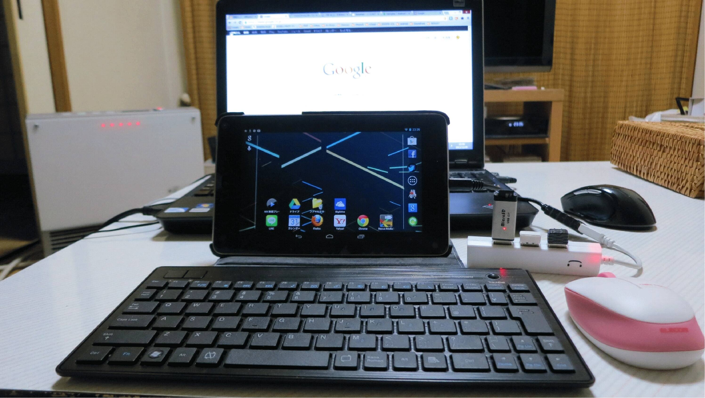
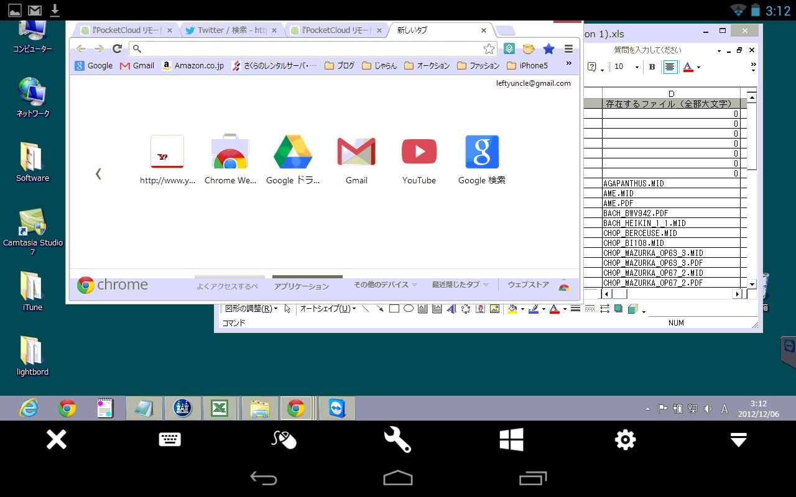

| TOP | weblog | TIPS | Works | リンク | 掲示板 |
| 2012-12-06 NEXUS7の何がオモロイか？ androidタブレットのNEXUS7ですが、何がオモロイのかというと、実はオモロイことは対してなかったりするのでありあります。 EMOBILEの端末と一緒に持ち歩いて、今までパソコンでしかできなかったことが手のひらの上で出来るのが「楽しい」のであります。 将来（？）の有効活用のためチマチマ情報収集しておりますが、いまいち掴みどころがない部分もあります。 こんなアホな使い方をするとWindowsと対して変わらなかったりします。  さらに「TeamViewer android」を使うと自宅のWindowsPCをリモート操作ができて、忘れ物したファイルをSkyDriveとかGoogleドライブに突っ込んだりすれば簡単に手に入ったり。  でも、EMOBILE端末を持って外出すると家のPCはオフラインになるので全然意味が無かったりします。 せっかくだから家の中でクラウドアプリの勉強をしようかなと思っております。 |